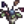

Heavy Furnace
This page or section contains unmarked spoilers from update 1.6 of Stardew Valley. Players may want to avoid or be cautious toward reading this article/section. |
| Article Stub
This article is marked as a stub for the following reason:
|
| Heavy Furnace | |
| It's more efficient than a regular furnace. Requires 25 pieces of ore and 3 coal per use. | |
| Information | |
| Source | Crafting |
| Sell Price | Cannot be sold |
| Crafting | |
| Recipe Source | |
| Ingredients | |
The Heavy Furnace is an improved version of the Furnace. It takes 25 ores (or 5 quartz or fire quartz) and 3 Coal to run it.
It saves 40% Coal in comparison to normal Furnaces. Additionally around half the time an extra bar is produced, when this happens 50% of the Coal and one sixth of the ore is saved in comparison to normal Furnaces.
Smelting
To smelt any ore, equip it and activate the furnace while there is Coal in inventory. Three units of Coal are required for each smelting operation, regardless of the material or duration. Extra bars might be produced.
| Input | Output | Time to smelt | Sells For(Unit) | Sells For(Total) |
|---|---|---|---|---|
|  Wilted Bouquet (1) | ||||
History
- 1.6: Introduced.